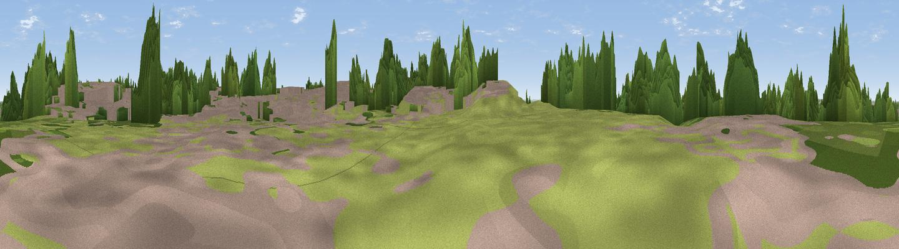

Beacon Hill
#42337 in England · top 75% of its area beats it · near Newark on TrentWhere it is
The exact computed spot (SK 81495 53945). Click the marker for map links.
The view, rendered

A 360° render of this exact spot computed from the terrain model, tree cover and land cover — summer colours, afternoon light, calibrated against photographs of famous viewpoints. Real trees, hedges and buildings will differ in detail.
The panorama
Grey silhouette: terrain skyline in each direction (720 bearings, Earth curvature and refraction included). Dashed green: skyline with trees (+15 m) and buildings (+8 m) as obstacles. Blue strip: how far the ground is visible on each bearing.
Where the view opens
Wedge length = distance to the farthest visible ground on that bearing (vegetation-aware). Rings at 10, 25 and 50 km.
What fills the view
29% built-up · 26% cropland · 25% grassland · 19% woodland ·
Angular shares of the visible panorama (visual magnitude), not map area. Landscape diversity 0.61 (0–1 Shannon).
Key numbers
More beautiful places nearby
The staircase of upgrades: each row has a higher view potential than everything closer. Driving times are estimates from straight-line distance, calibrated against real road routing — check an actual route before setting out.
| Place | Direction | Drive | Score |
|---|---|---|---|
| Beacon Hill | SSW · 0 km | ~1 min | 35.2 |
| Viewpoint near Fernwood | S · 5 km | ~10 min | 47.2 |
| Viewpoint near Upton | WNW · 7 km | ~15 min | 48.5 |
| Viewpoint near Caythorpe | ESE · 13 km | ~24 min | 49.9 |
| Viewpoint near Kneeton | SW · 14 km | ~25 min | 61.2 |
| Viewpoint near Great Gonerby | SSE · 17 km | ~29 min | 62.0 |
| Viewpoint near Belvoir | S · 20 km | ~34 min | 70.8 |
| Crich Stand | W · 47 km | ~68 min | 73.0 |
53.07652, -0.78496 · source: osm peak · position refined by local search. Computed location — check access rights before visiting.